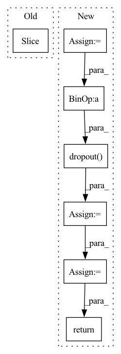

Pattern ID :30907
Before Change
length = input.size(1)
return self.pe[:, : length]
class DPTBlock(nn.Module):After Change
def forward(self, x):
x = x.permute(0, 2, 1).contiguous()
// x is seq_len, batch, channels
// x = x + self.pe[:x.size(0), :]
// x is batch, channels, seq_len
x = x + self.pe[:, :, :x.size(2)]
x = self.dropout( x)
x = x.permute(0, 2, 1).contiguous()
return x
class DPTBlock(nn.Module):In pattern: SUPERPATTERN
Frequency: 3
Non-data size: 7
Instances Fragment ID: 91001772
Project Name: zhongyang-debug/attention-is-all-you-need-in-speech-separation
Commit Name: 361486e2e14685189e9a65a81fa779b4728c6e18
Time: 2022-08-16
Author: 68770882+Zhongyang-debug@users.noreply.github.com
File Name: model/sepformer.py
M Class Name: Positional_Encoding
N Class Name: Positional_Encoding
M Method Name: forward(2)
N Method Name: forward(2)
M Parent Class: nn.Module
N Parent Class: nn.Module
M File Name: model/sepformer.py
N File Name: model/sepformer.py
M Start Line: 133
M End Line: 135
N Start Line: 143
N End Line: 155
Before Change
x = self.embedding(x, **kwargs) // (batch_size, target_seq_len, d_model)
x *= tf.math.sqrt(tf.cast(self.d_model, x.dtype))
x += tf.cast(self.pos_encoding[:, : seq_len, :], dtype=x.dtype)
x = self.dropout(x, **kwargs)
After Change
output = pos_enc_tgt
for i in range(self.num_layers):
normed_output = self.layer_norm(output, **kwargs)
output = output + self.dropout(
self.attention[i](normed_output, normed_output, normed_output, target_mask, **kwargs),
**kwargs,
)
normed_output = self.layer_norm(output, **kwargs)
output = output + self.dropout(
self.source_attention[i](normed_output, memory, memory, source_mask, **kwargs),
**kwargs,
)
normed_output = self.layer_norm(output, **kwargs)
output = output + self.dropout(self.position_feed_forward[i](normed_output, **kwargs), **kwargs)
// (batch_size, seq_len, d_model)
return self.layer_norm(output, **kwargs)
Fragment ID: 91001774
Project Name: mindee/doctr
Commit Name: 9530f81d15395006b4844299236bdadba11c1dde
Time: 2022-07-01
Author: felixdittrich92@gmail.com
File Name: doctr/models/recognition/transformer/tensorflow.py
M Class Name: Decoder
N Class Name: Decoder
M Method Name: call(5)
N Method Name: call(5)
M Parent Class: NestedObject,layers.Layer
N Parent Class: tf.keras.layers.Layer
M File Name: doctr/models/recognition/transformer/tensorflow.py
N File Name: doctr/models/recognition/transformer/tensorflow.py
M Start Line: 251
M End Line: 265
N Start Line: 160
N End Line: 179
Before Change
x = self.embedding(x) // (batch_size, target_seq_len, d_model)
x *= math.sqrt(self.d_model)
x += self.pos_encoding[:, : seq_len, :]
x = self.dropout(x)
// Batch first = True in decoderAfter Change
tgt = self.embed(tgt) * math.sqrt(self.d_model)
pos_enc_tgt = self.positional_encoding(tgt)
output = pos_enc_tgt
for i in range(self.num_layers):
normed_output = self.layer_norm(output)
output = output + self.dropout(
self.attention[i](normed_output, normed_output, normed_output, target_mask)
)
normed_output = self.layer_norm(output)
output = output + self.dropout(
self.source_attention[i](normed_output, memory, memory, source_mask)
)
normed_output = self.layer_norm(output)
output = output + self.dropout(self.position_feed_forward[i](normed_output))
return self.layer_norm(output)
Fragment ID: 91001775
Project Name: mindee/doctr
Commit Name: fddceba7bee5098b4219b7ba6a0bdf4f4a98adfe
Time: 2022-06-09
Author: felixdittrich92@gmail.com
File Name: doctr/models/recognition/transformer/pytorch.py
M Class Name: Decoder
N Class Name: Decoder
M Method Name: forward(5)
N Method Name: forward(5)
M Parent Class: nn.Module
N Parent Class: nn.Module
M File Name: doctr/models/recognition/transformer/pytorch.py
N File Name: doctr/models/recognition/transformer/pytorch.py
M Start Line: 74
M End Line: 91
N Start Line: 147
N End Line: 167